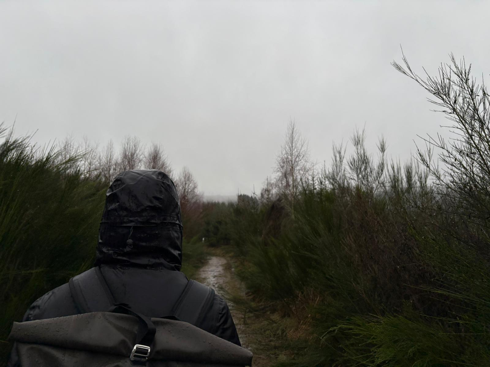

PhD Student at Hasselt University
PhD student at Hasselt University, working on research in learning-based video compression and streaming under the supervision of prof. dr. Jori Liesenborgs and prof. dr. Maarten Wijnants.
Neural Video Representations (NVRs) have recently been proposed as a novel approach to the video compression problem. NVRs consist of one or multiple small neural networks that are overfitted on one specific video sequence, thereby encoding the video within the weights and biases of the network(s). In contrast to other learned video coding approaches, NVR-based codecs do not rely on large datasets and have a relatively low decoding complexity. Many works have focused on improving the compression performance of NVR-based codecs by enhancing the overall codec design, devising more performant and parameter-efficient model architectures, and incorporating more advanced model compression schemes such as weight pruning, quantization, and entropy minimization. We provide a systematic overview of representative work in the field and discuss common weaknesses and opportunities for future work, with a focus on practical deployment for video streaming. This paper serves as both an introduction for newcomers and a reference for existing researchers, highlighting the potential of neural video representations as an alternative to traditional codecs in video compression.
MMSys Doctoral Symposium, 2026
Video streaming accounts for a significant portion of global internet traffic, necessitating video delivery systems that efficiently utilize network resources while maximizing end-user Quality of Experience (QoE). Traditional techniques for video compression as well as adaptive bitrate (ABR) streaming rely on hand-crafted heuristics, but have recently been superseded by learned alternatives. However, these components are typically studied in isolation. This Ph.D. research investigates how learned video compression and streaming algorithms can be jointly optimized to improve over-the-top end-to-end QoE. The project focuses on neural video representations (NVRs) as a lightweight alternative to conventional codecs, analyzing their limitations in streaming scenarios and developing methods to reduce encoding complexity. In parallel, the research aims to build a systematic understanding of learning-based ABR streaming approaches and their design trade-offs. The overarching goal is to build a unified learning-based video compression and streaming pipeline optimized for QoE. Initial work includes a survey of NVR-based video compression methods and an ongoing study on accelerating NVR encoding using hypernetworks.